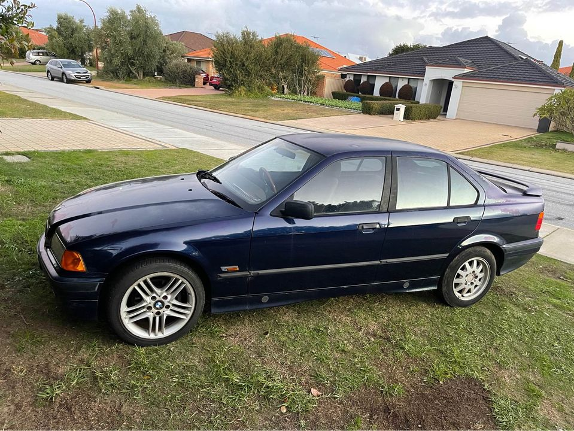

We are your BMW auto parts recyclers. We have an ever-growing product range for you to choose from. We deal in top quality second-hand parts and also supply used parts upon request. We are dedicated to selling quality products and providing you with a positive shopping experience.
Perth Salvage Yard is your go-to place for low priced BMW replacement parts and used parts. A well-renowned family business, they provide you with quality used BMW parts. They repair and refurbish your vehicle and deliver same to you in great condition. Visit Us:- http://www.perth-salvage.com.
We have the vast selection of BMW parts from all years and all different brands. We are proud to have gained the trust of BMW owners worldwide, and are always working to improve our service and reduce prices.

We recycle used BMW Parts. We take quality used BMW Car Parts, which may have less than 75,000km or may have been in the garage for months. We buy, process and resell used parts to customers in the Perth area. We provide a discreet, safe and friendly sales and after sales service, delivering high-quality used BMW parts for your BMW. We stock various spare parts, which may have limited use and are sold separately. We have a team of knowledgeable staff, who offer you a helpful service when purchasing BMW Used Parts, without the need to leave the comfort of your home. We buy and sell used BMW components at a fraction of the new car price. This means you save big money on fuel, insurance, tyres and more.
Buying a car part from Perth Salvage Yard is an experience that you cannot miss. You will know it when you see it. With our wide variety of products in our stock we also supply the parts in perfect condition. You don't have to worry about us messing up on your parts as we specialise in doing just that. If you need car parts in Perth, this is the place to come. Perth Salvage Yard provides a variety of car parts at our store. We carry a large number of spare parts that you can choose from. We also have second hand parts and new cars. The parts we have in stock are of top quality and come in great condition. About Us Perth Salvage Yard, an auto parts recycler and a trusted dealer, was started in 2004. We aim at offering the best in used car parts.
Our services include the following: Car Recycling and Repairs Our number one focus at Perth Salvage is recycling cars for you, and we offer a simple three step process to sell your vehicle without breaking the bank. If you are not comfortable recycling your vehicle yourself, Perth Salvage will provide the opportunity to recycle it for you for a fee. Mercedes, BMW and Audi Cars With our extensive range of vehicles for sale, you will not be short of choice. We deal with new and used models from these manufacturer's. Be it a Mercedes or a BMW, you will always find an excellent quality product. Chevrolet, Ford and GMC With our expanding range of vehicles, we strive to supply you with vehicles suitable for the most efficient drive.
With years of experience, we aim to provide you with excellent customer services and seamless payments. We pride ourselves on providing you with the best quality services, equipment and pricing. You can get the best auto parts for your BMW. We are also authorised recyclers and warranty providers. For a quick reply on your queries, give us a call on 0488151829. We also have a dedicated auto parts forum. Feel free to join our community and we are more than happy to answer your queries, help you locate your car parts and suggest you a reliable and well-informed suppliers. We will also deliver to your door so book an appointment to get your parts as soon as possible.
Address:103 Sheffield Rd, Welshpool WA 6106
Phone: (08) 9358 1392